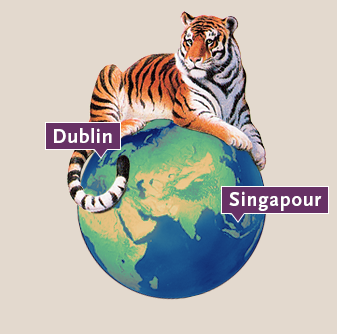
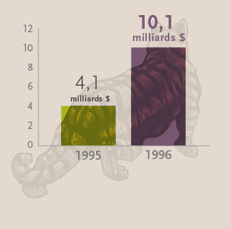

1990
Les innovations se poursuivent
-
AGF pose la question « Que faites-vous après le travail? » afin de souligner son engagement visant à aider les Canadiens à atteindre, tout au long de leur vie, leurs destinations, leurs objectifs et leurs rêves.
-
1991 L’investissement durable
Le Fonds d’actions mondiales Croissance durable AGF, lancé par Acuity Investments en décembre 1991, est l’un des premiers fonds au monde qui soit axé sur les placements durables et le premier au Canada à publier son empreinte écologique.
*Depuis septembre 2015, le Fonds publie ses paramètres environnementaux tous les trimestres. Pour en savoir davantage, visitez AGF.com/investissementdurable.
-
1991 Pleins feux sur l’avenir
1991 : AGF International Advisors (AGFIA) ouvre ses portes à Dublin.
1996 : AGF Asset Management Asia Ltd. ouvre ses portes à Singapour. -
1996 L’actif doubleAvec l’acquisition de fonds 20/20, l’actif géré d’AGF double presque et atteint 10 milliards $ en 1996.
-
Faire la différence
AGF est un partenaire de longue date du TIFF, l’un des festivals du cinéma les plus prestigieux au monde. -
La relève
1997 : Blake Goldring est nommé président de La Société de Gestion AGF Limitée.
1998 : Judy Goldring, désormais vice-présidente directrice et chef de l’exploitation, se joint à AGF.